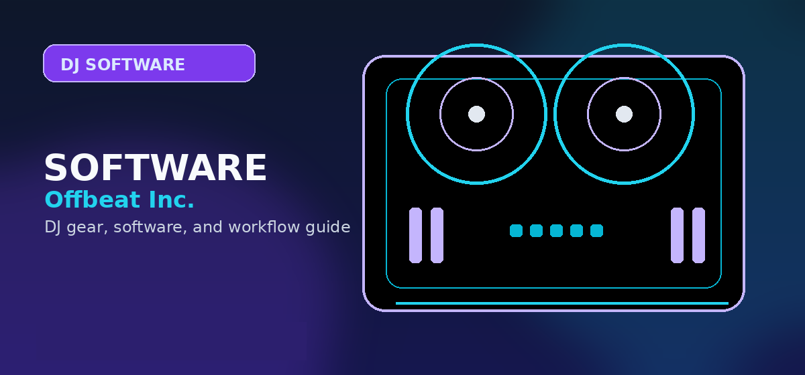

How to Record a Professional DJ Mix in 2026: Software, Gear, and Distribution Guide
Comprehensive guide to how to record a DJ mix 2026 software audio interface SoundCloud Mixcloud with practical recommendations and current buying notes — updated 2026.

Disclosure: This page uses affiliate links. We may earn a commission at no extra cost to you. Full disclosure →
A useful mix recording starts with a supported signal path, enough headroom and a short playback test. Choose internal or external capture for the sources you need, record a lossless archive master, then make a separate export for the platform you may use. The checklist below covers the recording, file verification and hosting decisions so you can repeat the process without assuming an interface or software upgrade is always necessary.
Choosing Your Recording Software: Internal vs. External
Choose the path your exact software, license and hardware support. An internal recorder can capture the software mix without an extra analog cable, but streamed tracks, external inputs or microphones may be excluded. Confirm the routing and make a test recording. If the built-in recorder is unavailable, use a supported USB record feed or a compatible analog output into an audio interface and recorder such as a DAW. A DAW adds editing options; it does not automatically make the capture cleaner or more professional.
The Hardware Essential: The Audio Interface
A separate interface is useful when your mixer or controller has a compatible analog record, booth or master output but no usable USB recording feed. It is not mandatory when a supported internal or USB recorder already captures the required sources. Match the output level, connector and interface input mode: use line inputs for line-level audio, not an unverified microphone or instrument input. Use balanced connections where both devices support them; a connector adapter does not balance an unbalanced signal or guarantee freedom from hum. Follow the exact device manuals and test both channels before the set.
Optimizing Your Recording Workflow
Watch the recorder as well as the mixer: clipping anywhere in the signal chain can spoil the capture. On the digital recording meter, leave headroom below 0 dBFS; peaks around -6 to -3 dBFS are a practical starting point, not a calibration for every analog mixer meter. Record an archive master as WAV or AIFF at a supported sample rate such as 44.1 or 48 kHz, with 24-bit capture when available. A lossy export cannot recover detail already lost. Make a short test recording and listen to both channels, the loudest transitions, effects and any microphone or external sources you need included.
Capture and Export Checklist
Run the same sequence every time so a finished file is ready for any platform. Menu names vary by hardware and software — match them to your own controller's routing manual.
- Choose the capture path first: internal USB recording when your software, license, and hardware support it; otherwise an analog line, booth, or master output into an audio interface.
- Confirm routing and cables: verify the exact output on your mixer or controller, the input type on the interface, then set the recorder to WAV or AIFF at 44.1kHz or 48kHz, 16-bit minimum (24-bit when available).
- Set the gain: play the loudest section of the set and set mixer and interface gain so loud passages peak around -6dB to -3dB with no clipping.
- Make a 30-second test recording: play it back and check both left and right channels, the noise floor, and whether software FX, external sources, and the microphone are in the feed you expect.
- Record the full set: keep the recording input gain stable when levels are healthy, continue managing track/channel gains and transitions, watch for clipping, and write your running tracklist as you go.
- Verify the file: after recording, check the file's duration, size, and first and last 30 seconds before disconnecting gear or deleting working files.
- Export for the destination, not the master: keep the WAV/AIFF archive master. Upload a supported lossless file where the destination accepts it; create a 320kbps MP3 sharing copy only when that format suits the destination or file-size needs.
Realistic contingencies: If your software has no supported internal recorder, use a verified USB record feed or compatible stereo line-output path. A laptop headphone/microphone combo jack is not automatically a stereo line input: confirm input mode, wiring and level compatibility before connecting equipment, or use a supported USB interface. Check whether microphones and external inputs reach the record feed. Built-in phone microphones capture room sound; a phone with a supported external audio interface is a different setup and must be tested.
Distribution: SoundCloud vs. Mixcloud
Choose a host before making your sharing copy. SoundCloud requires permission from the relevant rights holders for every third-party track included in a DJ mix; passing an upload scan is not permission. Mixcloud licenses eligible long-form shows under its rules, rather than granting universal rights for every upload or another platform. Shows must be over 15 minutes and follow its Featured Artist Rules; availability can still be restricted. Read Mixcloud's official upload policy before posting. Keep the lossless archive master, create the destination's supported sharing copy, then check that the upload plays before promoting it.
Audio Interface Recommendations 2026
| Interface | Best For | Est. Price | Pros | Cons |
|---|---|---|---|---|
| Focusrite Scarlett 2i2 (4th Gen) | Beginners / Home Studio | Check current price | Two-input recording option; verify routing | Basic routing options |
| Universal Audio Volt 2 | Hybrid DJ/Producers | Check current price | Vintage preamp mode, rugged | Check routing and driver support |
| RME Babyface Pro FS | Touring Professionals | Check current price | Routing and driver options; check your OS | Expensive, steep learning curve |
| PreSonus AudioBox USB 96 | Budget/Portable | Check current price | Compact, very affordable | Check input modes and available headroom |
Quick Verdict
For beginners, use internal recording only when your software, license, hardware and music source support it. Serato DJ Lite has no built-in recorder; Pro also restricts recording with streaming tracks and Practice Mode. If your setup cannot record internally, check the external audio-interface workflow below before buying an upgrade. If you are upgrading to a professional setup, choose an interface and recorder whose input modes, routing and OS support match your actual equipment. For distribution, compare Mixcloud and SoundCloud using their current licensing and upload rules; neither guarantees that a copyrighted set or short clip will remain available.
*
Ready to upgrade your sound? Check out our curated list of the best audio interfaces and DJ controllers of 2026 via the affiliate links below to get the best current pricing and bundles.
Recording setup summary: Use a supported internal/USB record feed, or a compatible record, booth or master line output into suitable interface inputs. Verify both channels, leave digital peak headroom, and keep a WAV/AIFF master at a supported 44.1 or 48 kHz. Make a 320kbps MP3 sharing copy only if the destination supports it. Headphone outputs are not fixed line-level feeds; consult the exact routing manual. Get the Focusrite 2i2 on Amazon →
Shop on Amazon
Record your DJ set cleanly on Amazon — interfaces for every recorder.
Prerequisites and Foundational Knowledge
First choose your capture path. Internal recording is provided by your DJ software only with compatible licensing, hardware and music sources. External recording requires an audio feed from your mixer/controller to a genuine stereo line input or a USB audio interface with two line inputs. Laptop headset and microphone sockets are not automatically stereo line inputs.
For reliable capture, check your exact hardware outputs, required cables, software recording eligibility and available disk space before starting a full set.
Common Mistakes People Make (And How to Avoid Them)
- Assuming free software records sets: Serato DJ Lite lacks a built-in recorder; Pro recording also depends on supported hardware and music. Streaming tracks and hardware-free Practice Mode are excluded.
- Connecting to a mono microphone input: stereo recording normally uses separate left and right line inputs. Confirm your capture device supports them.
- Clipping the signal: turn down controller/interface gain until loud passages remain below clipping, then listen to a short test recording.
- Missing microphone audio: some mixer/controller USB feeds do not include the external microphone; verify the hardware's recording path.
- Assuming uploads are automatically legal: check the destination's music-rights rules. Mixcloud shows can still be restricted under its Featured Artist Rules.
Tools and Resources You'll Need
- DJ gear: an existing controller or mixer, music source, headphones and compatible computer.
- Recorder: use the internal recorder if supported; otherwise Audacity or another DAW with a compatible stereo input.
- External audio interface: two line-level inputs for left and right. For the Scarlett 2i2 4th Gen, connect outputs to separate 6.35mm line inputs in line mode, not instrument mode.
- Matching cables: verify exact output connector type and interface input requirements before buying adapters.
- Test: record thirty seconds, play it back, and confirm both channels, gain and file location.
Advanced Optimization and Pro Tips
- Keep a lossless master such as WAV and export compressed versions only for sharing when needed.
- Leave headroom: clipping cannot be repaired merely by normalizing a file afterward.
- Test the entire signal path: check whether software FX, external sources and the microphone are in your specific recording feed.
- Save and verify: listen to the resulting file before disconnecting equipment or deleting working files.
- Plan distribution: keep a tracklist and check current platform limits, licensing and format requirements.
Troubleshooting and When to Seek Help
- Silence: check selected capture device and input channels; verify the mixer really supplies a recording signal.
- Only one stereo channel: verify left and right cabling and interface/DAW channel assignment.
- Distortion: lower output and input gain; make a new loud-section test.
- Mic not recorded: some hardware excludes the mic from its USB record feed. Check the manufacturer's signal-routing notes.
- Crackling or dropouts: inspect disk/CPU usage, USB stability, sample-rate match and audio driver.
- Recorder unavailable: check Serato tier, connected hardware and streaming/Practice Mode rules. See Serato's device-specific instructions.
Step-by-Step Software Configuration
Recording your mix requires precise signal routing to ensure you capture high-fidelity audio without clipping. Below are the standard workflows for the most popular DJ software.
Configuring Serato DJ Pro
Serato DJ Lite has no built-in set recorder. Serato DJ Pro recording requires an eligible license, subscription or hardware unlock and compatible recording-capable hardware. It is unavailable with streaming-service tracks or hardware-free Practice Mode. Check Serato's official recording requirements before paying for an upgrade. With a supported local-file setup, open the Recording panel, select the recording source supported by your hardware, and make a short test recording to check levels before recording the full mix.
Configuring Rekordbox DJ
Recording routes depend on the rekordbox version and device. In rekordbox 6, distinguish the software master from audio returning through hardware:
- For the software master, use the supported PERFORMANCE-mode recording path; check the selected audio device and internal mixer mode.
- For input from supported Pioneer DJ hardware, check Preferences > Audio > Input channels > Input Record. Some mixers/controllers also need the correct return channels in their Setting Utility's MIXER OUTPUT settings; follow the exact device instructions.
- For external input from other equipment, AlphaTheta's version-6 recording FAQ directs you to the EXPORT-mode recorder. Do not assume the same PERFORMANCE-mode input routing applies.
- Choose the source and supported record path for your installed version, set recording level and file location, then save and play back a short stereo test before the full set. For other versions, use their corresponding recording documentation rather than treating these version-6 menu names as universal.
Using Audacity as an External Recorder
For those using external mixers without internal software recording, Audacity is the industry standard for free capture. Set your 'Recording Device' to your audio interface. Set the project rate to 44.1kHz or 48kHz at 24-bit depth. Always perform a test recording to check for signal floor noise before beginning your full set.
Export Formats: WAV vs. MP3 vs. FLAC
Understanding export formats is crucial for maintaining audio integrity. Your goal is to record in the highest possible quality and compress only for final distribution.
- WAV (Uncompressed, 16/24-bit): The gold standard for your master recording. Always record in WAV to preserve full dynamic range.
- MP3 (320kbps): A smaller sharing copy where the destination supports it, not a required upload step. SoundCloud recommends supported lossless files; check the chosen host's current accepted formats before exporting.
- FLAC: Excellent for lossless archiving if you need smaller files than WAV without sacrificing quality, though compatibility varies across streaming platforms.
Need a reliable interface for clean capture? Check out the Focusrite Scarlett 2i2 for studio-grade analog-to-digital conversion.
Platform Workflow: SoundCloud vs. Mixcloud
Where you host your mix depends on your goals as a DJ. Each platform requires a specific workflow to avoid copyright takedowns and ensure playback quality.
SoundCloud
Use SoundCloud only when you have permission from the relevant rights holders for every included third-party track. Accepting possible removal is not an alternative to permission. Confirm upload availability and provide a readable tracklist so listeners can identify the music.
Mixcloud
Mixcloud hosts eligible long-form shows under its rights arrangements, but Featured Artist Rules and upload restrictions apply. Short copyrighted mixes under 15 minutes may be ineligible and some shows can still be restricted. Check current file size and accepted formats.
Frequently Asked Questions
What is the best way to record a DJ mix?
Record from your mixer's record output directly into your computer using an audio interface or the built-in USB soundcard in controllers. Audacity or Ableton Live work well as recording software.
Can I record a DJ mix with just a phone?
A built-in phone microphone records the room as well as the mix. For a direct stereo capture, check whether your phone and recording app support a compatible external audio interface, then test its routing and levels before the set.
What format should DJ mixes be recorded in?
Record in WAV or AIFF at 44.1kHz/16-bit minimum. You can export to MP3 (320kbps) for sharing. Lossless WAV preserves quality for mastering before distribution.
How do I record a live DJ set?
Use an eligible mixer output through an audio interface or a compatible USB record feed where your exact model provides it; USB output routing varies across mixers.
How long should a DJ mix be?
Choose a duration that suits the set and intended audience. If using Mixcloud's licensed-show route, check its over-15-minute threshold and Featured Artist Rules. For an event archive, keep the full capture before editing a sharing copy.